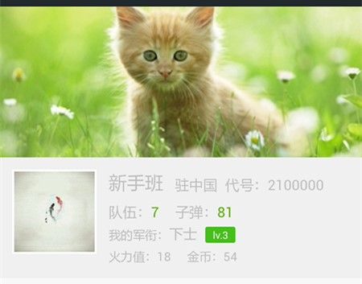
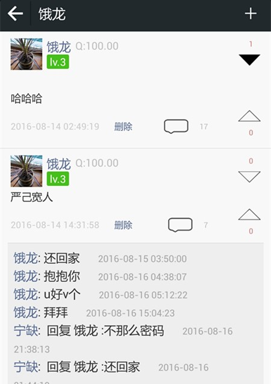
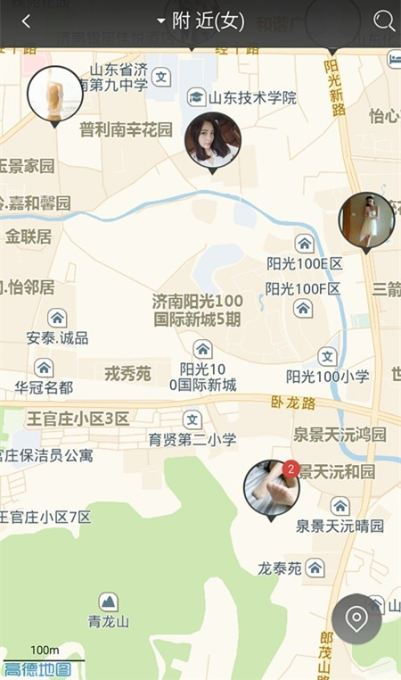

Project Goal
iSee is a social media App with clear post-reply sequence and flexible commenting mechanism.
These are 17 CHMs that are common in the market and have considerable economic value.
Some of them, e.g. CHM 3 and CHM 5, are hard to distinguish.

Motivation
iSee was to solve the issue of unclear post-reply dialogs in Weibo (and many other social media products), which bring challenges for others to track the whole story in the forum. Another target is to solve the problem that most of the social media products only provide “like” option, which only allow you to express positive thoughts, and do not allow you to dislike it.
Technique
Android (Java), PHP, and MySQL.
Demo
"Moments" is for users to post thoughts (texts/photos). Others can comment, and OP (or others) can comment back.

"Radar" shows the location of nearby people (who need favor or can provide favor) on a map in real time. (not completed)
